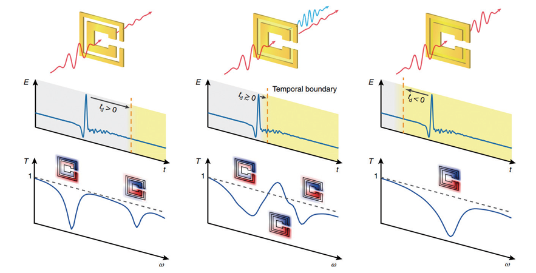
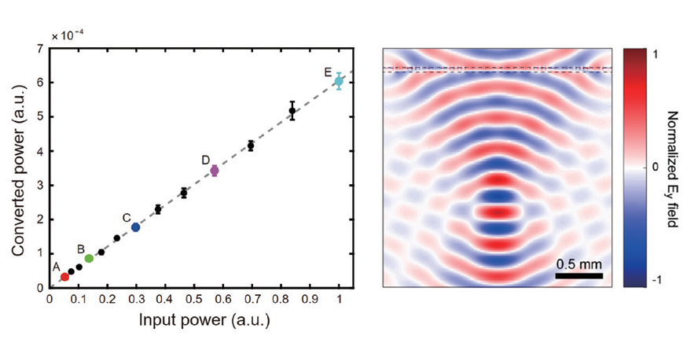

KAIST Top 10
KAIST Top 10
KAIST RESEARCH ACHIEVEMENTS
Linear Frequency Conversion of Light at a Spatiotemporal Boundary
Department of Mechanical Engineering Bumki Min
Summary
Closely associated with the symmetry-conservation relation, the frequencies of electromagnetic waves are converted as the waves propagate through a temporally varying medium. Thus, effective temporal control of the medium, through which the waves propagate, lies at the heart of linear optical frequency conversion. This study proposes rapidly time-variant metasurfaces as a frequency converting platform and experimentally demonstrates their efficacy at THz frequencies. As the proposed scheme does not rely on the nonlinearity, it has potential advantages for the frequency conversion of waves with weak intensities. In addition, the phase controllability in time-variant metasurfaces could be useful for various types of wavefront engineering, such as the steering and focusing of converted waves.
Background
Currently, frequency conversion in metasurfaces and metamaterials is entirely based on the nonlinear susceptibility of the constituent materials. Therefore, the frequency of a converted wave cannot be freely chosen as it is subject to energy conservation between interacting waves. This limitation of nonlinear frequency conversion can be solved through linear frequency conversion using time-varying media that breaks time-translational symmetry. Fortunately, continual theoretical efforts have been made to understand linear frequency conversion under various physical conditions of time-varying media. Recently, a leading group of researchers proposed a chip-scale dynamic optical structure for the observation of wavelength conversion.
Previous studies revealed that it is necessary to make large temporal changes in the properties of the media through which light is transmitted to maximize the frequency shift. Active resonant metamaterials, in which the resonating metaatoms are hybridized with electrically or optically controllable natural materials, can be thought of as an optimal platform that can be spatiotemporally rearranged. More specifically, ultimate linear frequency-conversion devices can be realized through dramatic morphological transformations of conducting resonance structures and their associated mode field profile changes. Furthermore, rapid temporal changes in the thin time-variant metasurface make it possible to clearly observe the coherent effect by limiting the spatiotemporal domain in which the new frequency component is generated. This study proposes an active metasurface for the demonstration of a spatiotemporal boundary and linear frequency conversion. The proposed time-variant metasurface consists of an array of two concentric split-ring resonators (SRRs) exhibiting two fundamental LC resonances. Upon the sudden increase in the conductivity of the area between the two SRRs, two fundamental resonance modes are annihilated and a completely different resonance mode corresponding to the merged single SRR is created. This abrupt change in resonance mode constitutes a temporal boundary. When the temporal boundary is significantly behind or ahead of the input terahertz (THz) pulse, the modes driven by this input pulse are not disturbed; thus, the responses are those of a stationary metasurface. However, when the temporal boundary is coincident with the input pulse coupled to the metasurface, an interesting time-varying phenomenon is observed as the operation of the metasurface cannot be simply described with the steady-state responses. Although the original resonance modes still persist, a sudden merging of meta-atoms, that is, a spectrally engineered rapid temporal variation of the metasurface, is induced, and forward from this temporal boundary, the merged mode oscillating at the resonance frequency ωm becomes the only fundamental eigenmode that can be sustained at the metasurface. Intuitively speaking, frequency conversion arises from this dynamic mode conversion process that occurs at the temporal boundary. In addition, the phase of the converted wave can be controlled by moving the temporal boundary, and such phase controllability is a unique characteristic of the proposed scheme.
 Fig. 1. Schematic illustration of time-varying metasurfaces and frequency conversion.
 Fig. 2. (left) Linearity of the frequency conversion (right) Focusing of the converted wave via full-phase control of each meta-atom
Expected effect
In this study, the conversion efficiency remains invariant with respect to the intensity of the input wave. Therefore, this method is expected to be particularly beneficial for the frequency conversion of waves with weak intensities, which has clear distinctions from frequency conversion in nonlinear materials or nonlinear metamaterials. This capability is important for certain frequency ranges at which powerful light sources do not exist. For such frequency ranges, the proposed method is the only method for frequency conversion. Furthermore, the frequency of a converted wave and its efficiency are tailorable to a large degree as the conversion process does not require energy conservation between participating waves due to the presence of a temporal boundary in addition to the temporal reconfigurability between distinct dispersive responses of the metasurface. This degree of engineering freedom could not be achieved using existing plasma-based apparatus or photonic crystal devices. Finally, the phase of the converted wave can be fully controlled by 2 radians, which will lead to a myriad of new phase-sensitive applications, such as in wavefront engineering.
Research Outcomes
[Paper 1] Kanghee Lee, Jaehyeon Son, Jagang Park, Byungsoo Kang, Wonju Jeon, Fabian Rotermund, and Bumki Min, “Linear frequency conversion via sudden merging of meta-atoms in time-variant metasurfaces”, Nature Photonics 12, 765-773 (2018) (IF = 32.521)
[Paper 2] Teun-Teun Kim, Sangsoon Oh, Hyeon-Don Kim, Hyun Sung Park, Ortwin Hess, Bumki Min, and Shuang Zhang, “Electrical access to critical coupling of circular polarized waves in graphene chiral metamaterials”, Science Advances 3, e1701377 (2017) (IF = 11.51)
[Keynote Speech] Bumki Min, “Rapidly time-variant metadevices for linear frequency conversion”, SPIE Optics+Photonics 2018, San Diego, http://spie.org/newsroom/op18_landing/op18_min